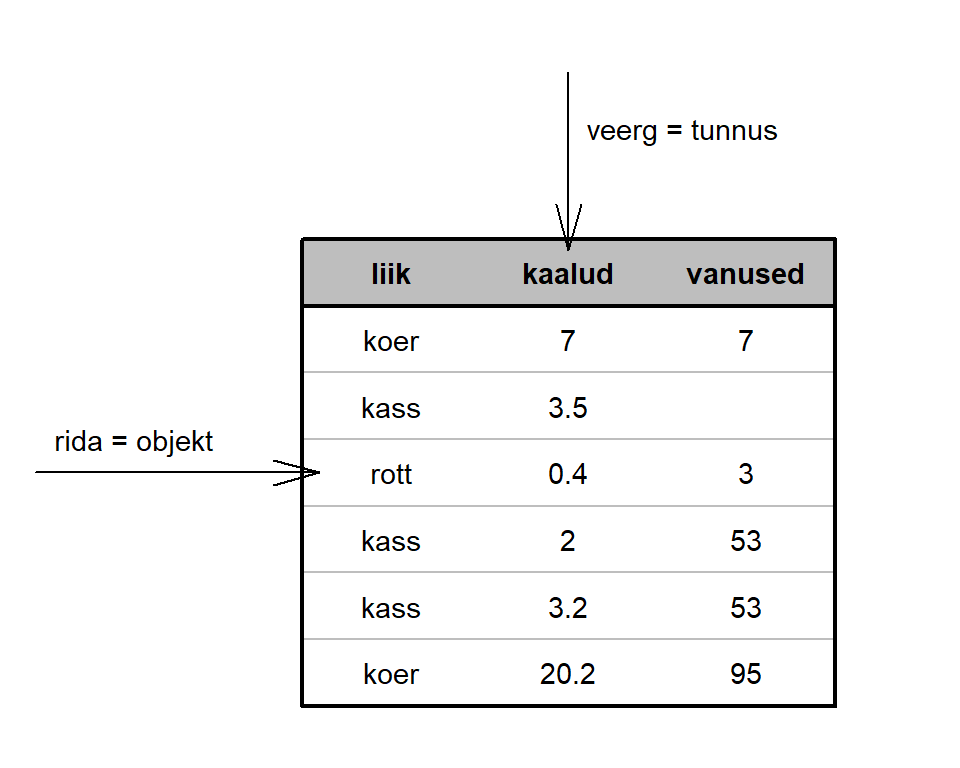

Nagu eelmises praktikumis öeldud, siis vektori väärtused peavad olema kõik ühte tüüpi. R-is on 5 väärtuste põhitüüp
R-is on 5 väärtuste põhitüüpi:
int / integer – täisarvud (ka negatiivsed)numeric – reaalarvudcplx / complex – kompleksarvudchar / character – sõned (tähemärgid ja muud tekstilised sümbolid, sisestamisel kasutada jutumärke)logical – tõeväärtused (ainult kaks väärtust: TRUE või FALSE)Üht tüüpi väärtust saab vahel teisendada teist tüüpi väärtuseks vastava as.<tüübi_nimi> käsuga (as.integer, as.numeric, as.character jne). Kontrollimaks mingi väärtuse tüüpi saab kasutada vastavat käsku is.<tüübi_nimi> (is.integer, is.numeric, is.character jne).
Eelmises praktikumis moodustasime mõned vektorid. Tekitame need uuesti
kaalud <- c(7, 3.5, 0.4, 2, 3.2, 20.2)
liik <- c("koer", "kass", "rott", "kass", "kass", "koer")
vanused <- c(7, NA, 3, 53, 53, 95)is.integer(kaalud)
is.numeric(kaalud)
class(liik)
class(vanused)# Proovi, mis saad järgmise käsu vastuseks
is.na(vanused)month.name ja x <- c(0:5, "tekst", "T", 234.5, "234,5") korral, kas need on tekstivektorid st kasuta funktsiooni is.character(.). Seejärel vaata, mis on tulemuseks kui rakendad funktsiooni as.numeric(.) nendele vektoritele.is.integer(1:4) ja is.integer(c(1, 2, 3)) erineva tulemuse?is.na(.) vektorile z <- c("a", "NA", NA, 0). Kas tulemus on oodatav?# Ülesanne 1
month.name
x <- c(0:5, "tekst", "T", 234.5, "234,5")
x
# Kas on sõned?
is.character(____)
is.character(____)
# Proovi arvuks teisendada: as.numeric()
as.numeric(____)
as.numeric(____)
# Ülesanne 2
# Miks on tulemused erinevad?
is.integer(1:4)
is.integer(c(1, 2, 3))
# Ülesanne 3
# Kas tulemus on oodatav?
z <- c("a", "NA", NA, 0)
is.na(z)Kui sõned ja numbrilised väärtused on intuitiivselt arusaadavad, siis omaette käsitlust vajavad tõeväärtused. Kui käsuga mean kasutada argumenti na.rm, siis selle argumendi väärtus võib olla TRUE või FALSE. Tegemist on tõeväärtustega (ingl.k. boolean, logical). Kuna tõeväärtustega saab teha loogilisi tehteid (ehk neid kombineerida), siis on neist kasu ka mujal kui na.rm argumendi väärtustamisel.
Loogilisi tehteid on kolm: korrutamine (&), liitmine (|) ja eitus (!).
| tehe | tulemus |
|---|---|
| TRUE & TRUE | TRUE |
| TRUE & FALSE | FALSE |
| FALSE & TRUE | FALSE |
| FALSE & FALSE | FALSE |
| ————————— | ————— |
| TRUE | TRUE | TRUE |
| TRUE | FALSE | TRUE |
| FALSE | TRUE | TRUE |
| FALSE | FALSE | FALSE |
| ————————— | ————— |
| !TRUE | FALSE |
| !FALSE | TRUE |
Tõeväärtus on tulemuseks siis, kui võrdleme kahte objekti/väärtust omavahel.
| võrdlus | sümbol | näide |
|---|---|---|
| võrdumine | == |
2 == 3 ; "a" == "A" |
| mittevõrdumine | != |
2 != 3 ; "a" != "A" |
| väiksem kui | < |
2 < 3 ; "a" < "A" |
| väiksem või võrdne | <= |
3 <= 2 ; "a" <= "A" |
| suurem kui | > |
3 > 2 ; "a" > "A" |
| suurem või võrdne | >= |
3 >= 2 ; "a" >= "A" |
Nagu ennist mainitud, siis R-is tehakse tehteid vektoritega elementhaaval. Seepärast ka siis, kui võtame mingi arvulise vektori ja võrdleme seda mingi arvuga, siis võrreldakse igat elementi eraldi ja tulemuseks on tõeväärtustest koosnev vektor, milles on sama palju elemente kui oli elemendiviisilisi võrdluseid. Sama kehtib ka juhul, kui võrreldakse muud tüüpi väärtuseid (näiteks tekstilisi väärtuseid).
kaalud > 10
vanused == 53
liik == "kass"
vanused == kaalud
liik == "kass" | liik == "koer"Kui soovime mingit väärtust võrrelda NA-ga, et teada saada, kas tegemist on puuduva väärtusega või mitte, siis topeltvõrdusmärgid ei tööta, vaid tuleb kasutada käsku is.na(.)
vanused == NA## [1] NA NA NA NA NA NAis.na(vanused)## [1] FALSE TRUE FALSE FALSE FALSE FALSEMõnikord on soov kontrollida, kas mingi väärtus leidub etteantud hulgas. Siis on sobilik kasutada operaatorit %in% :
1:4 %in% c(2, 5)## [1] FALSE TRUE FALSE FALSEc(2, 5) %in% 1:4## [1] TRUE FALSETõeväärtuste puhul on huvitav see, et kui nendega tavalisi arve korrutada või liita vms, siis konverteeritakse tõeväärtused arvudeks: TRUE muutub arvuks 1 ja FALSE muutub arvuks 0.
is.na(vanused) * 1## [1] 0 1 0 0 0 0sum(is.na(vanused)) # mitmel vaatlusalusel on vanus puudu## [1] 1Konverteerimine toimib automaatselt. Kui on endal soov tõeväärtuseid arvuliseks muuta, saab rakendada käsku as.numeric(.) tõeväärtustega vektorile. Saab ka vastupidi: kui on soov arvusid tõeväärtusteks muuta, saab seda teha käsuga as.logical(.). Proovi!
c(.) kasutades viiest elemendist koosnev tõeväärtusvektor, sealjuures neljas element olgu NA. Konverteeri see vektor arvuliseks käsuga as.numeric. Missuguse arvulise väärtuse sai NA?TRUE ja millised väärtuseks FALSE, kui kasutada käsku as.logical.NA?as.integer(c("tere", 0, 1, TRUE, FALSE)) ja as.integer(c(0, 1, TRUE, FALSE)) ning mõtle, miks väärtused TRUE ja FALSE teisendatakse neil juhtudel erinevalt.# Ülesannde 1
x <- c(__, __, __, __, __)
x
as.numeric(x)
# Mis sai NA-st?
# Ülesannde 2
?as.logical
# Kontrolli
nr <- c(-3, -1/3, 0, 1, 2, Inf, -Inf, NA, NaN, 1:4)
as.logical(nr)
# Ülesannde 3
NA | FALSE
NA | TRUE
NA & FALSE
NA & TRUE
!NA
# Ülesannde 4
as.integer(c("tere", 0, 1, TRUE, FALSE))
as.integer(c( 0, 1, TRUE, FALSE))
# Miks on tulemused erinevad?Lisaks tasub teada, mis tekst teisendub loogikaväärtuseks? Proovi järgmisi käskusid jooskutada. Kas saad aru, mille järgi R tunneb tõeväärtused ära?
# Vaata abiteksti
?logical
# c("T", "TRUE", "True", "true") are regarded as true,
# c("F", "FALSE", "False", "false") as false
# Kontrolli
tekst <- c("T", "TRUE", "True", "true", "F", "FALSE", "False", "false", "skljgsdfj", "TRue", "truE", "fals", "FAlse")
as.logical(tekst)Tavaliselt koosnevad andmestikud ridadest ja veergudest (tulpadest), kus iga rida vastab mingile mõõtmisobjektile ja iga veerg vastab mingile mõõdetud omadusele (tunnusele).

Erinevad statistikaprogrammid kasutavad andmestike säilitamiseks eri failiformaate. Et andmestikke ühest programmist teise saada, on üheks võimalikuks lahenduseks andmetabel salvestada vahepeal tekstiformaadis failiks, näiteks .txt või .csv tüüpi failiks ja importida tekstifail.
MS Exceli faile ning statistikatarkvarade spetsiifilisi andmeformaate (nt Stata .dta, SPSS-i, .sav) ei saa R-i importida baaspaketi käskude abil. Selliste failide impordiks on vaja kasutada mõnda R-i lisapaketti.
Tänases praktikumis vaatame nii tekstifailis andmete kui ka mõne teise statistikaprogrammi andmefailide importimist R-i.
Kõige olulisem käsk tekstikujul andmestike sisselugemiseks on read.table(). Sellel on mitmeid argumente, mille abil saab täpsustada erinevaid asjaolusid, mis antud andmestikku puutuvad:
file |
- | faili asukoht ja nimi koos faililaiendiga (peab olema jutumärkides) |
header |
- | kas faili esimeses reas on veerunimed? (TRUE = jah, FALSE = ei) |
sep |
- | millise sümboliga on veerud eraldatud? (nt "\t" - tabulaatori sümboliga) |
dec |
- | kuidas on märgitud kümnendmurru eraldaja? (nt "." või ",") |
quote |
- | millega on tekstilised väärtused ümbritsetud? (nt "\"" tähendab, et kahekordsete jutumärkidega) |
na.strings |
- | kuidas on failis puuduvad väärtused tähistatud? |
fileEncoding |
- | mis tähekodeeringut kasutatakse (Windowsis sageli "latin1", Macis/Linuxis sageli "UTF-8") |
Faili asukoht võib olla kõvakettal või võrgus. Kui käsu setwd abil on määratud, milline on käimasoleva töösessiooni töökataloog, ja andmefail on selles kataloogis, siis piisab käsule read.table ainult faili nime etteandmisest (täispikka asukohta ei pea andma). Windowsis on kombeks kaustastruktuuri tähistamiseks kasutada kurakaldkriipsu (tagurpidi kaldkriipsu) \, aga R-is on sellisel kaldkriipsul eriline tähendus – sellega märgitakse, et järgneb erisümbol (nt \t on tabulaatori sümbol). Seepärast tuleb Windows operatsioonisüsteemis kataloogitee märkimisel kasutada kahekordseid kurakaldkriipse. Teine võimalus on kasutada tavalist kaldkriipsu, nagu MacOS-is ja Linuxites:
# Windows operatsioonisüsteemis
# variant 1
setwd("C:/Users/mina/Rkursus/")
# variant 2
setwd("C:\\Users\\mina\\Rkursus\\")
# Linux ja MacOS operatsioonisüsteemides
setwd("/home/mina/Rkursus/")Andmete sisselugemisel tuleks anda andmetabelile nimi (salvestada see mingi objektina), vastasel juhul andmestik trükitakse lihtsalt ekraanile ja sellega enam midagi muud teha ei saa:
naide1 <- read.table("https://github.com/Rkursus/mooc/raw/main/data/esimene.txt",
header = T, sep = "\t", dec = ",")Töökeskkonnas olevaid andmetabeleid saab faili kirjutada käsuga write.table(.), andes käsule ette salvestatava andmestiku nime ning loodava faili nime jutumärkides (vajaduse korral koos kataloogiteega):
# Proovi oma RStudios
write.table(näide1, "failinimi.txt", sep = "\t")Vaata read.table käsu argumentide täielikku loetelu abifailist.
Aadressil https://github.com/Rkursus/mooc/tree/main/data/ leiad failid tabel1.csv, tabel2, tabel3.txt, tabel4.tab. Tutvu nendega (Notepadi vmt kasutades) ja proovi need seejärel R-i korrektselt sisse lugeda. Veendu, et R-is olevates tabelites on sama palju veerge kui originaalandmestikes.
USA riiklikud institutsioonid võimaldavad päris sageli andmekogudele vaba ligipääsu. Selles aines kasutame näidisandmestikena USA Rahvaloendusbüroo poolt kogutud andmeid, millele saab ligi IPUMS-USA (S. Ruggles, J. T. Alexander, K. Genadek, R. Goeken, M. B. Schroeder, ja M. Sobek. Integrated Public Use Microdata Series: Version 5.0. Minneapolis, MN: Minnesota Population Center, 2010.) liidese kaudu. (Kursuse andmestike kaustast]( https://github.com/Rkursus/mooc/tree/main/data/) on fail mass.txt, milles on Massachusettsi osariigis ühe valikuuringuga kogutud andmed. Loe see R-i sisse, andmestiku objektile pane nimeks andmed. Tutvu ka tunnuste kirjeldustega. Andmestikuobjektist esmase ülevaate saamiseks kasuta käsku str(andmed).
# Ülesanne 1
?read.table
# Ülesanne 2
tab1 <- read.table("https://github.com/Rkursus/mooc/raw/main/data/____", ____)
tab2 <- read.table("https://github.com/Rkursus/mooc/raw/main/data/____", ____)
tab3 <- read.table("https://github.com/Rkursus/mooc/raw/main/data/____", ____)
tab4 <- read.table("https://github.com/Rkursus/mooc/raw/main/data/____", ____)
tab1;tab2;tab3;tab4
# Ülesanne 3
andmed <- read.table(____)
# ülevaate saamine andmstikust, kontroll
str(andmed)Käsuga read.table(.) sisse loetud andmestik on erilist tüüpi, data.frame-tüüpi objekt. Andmestikust saab kiire ülevaate järgmiste käskudega:
nrow(andmed) |
- | mitu rida on andmestikus |
ncol(andmed) |
- | mitu veergu on andmestikus |
dim(andmed) |
- | mitu rida ja mitu veergu on andmestikus |
str(andmed) |
- | andmestiku struktuur: mis tüüpi iga tunnus on ja esimesed väärtused |
summary(andmed) |
- | lühike kirjeldav statistika iga tunnuse kohta |
names(andmed) |
- | veergude nimed |
head(andmed) |
- | andmestiku mõned esimesed read |
Käsu summary(.) puhul on näha, et mõne tunnuse puhul arvutatakse keskmine, miinimum, maksimum jne, aga teise tunnuse puhul esitatakse sagedused. See, millist kirjeldusviisi kasutatakse, tuleneb tunnuse tüübist. Kui käsuga str(.) vaadata, mis on tunnuste tüübid selles andmestikus, on näha kahte tüüpi tunnuseid: int ja chr. On näha, et summary(.) käsk arvutab int-tüüpi tunnustele keskmisi jne, char-tüüpi tunnustele aga on antud vaatluste arv ja tüübinimi. Kui andmete impordil määrata sõnesid sisaldavad tunnused faktor-tunnusteks (stringsAsFactors=TRUE) siis näitab summary(.) käsk sõnelisele tunnusele sagedusi. Faktortüüpi tunnus sarnaneb sõnele (character), kuid üheks erinevuseks on näiteks fikseeritud väärtuste hulk. Faktortunnust vaatame järgmises praktikumis ka täpsemalt.
Üks R-i populaarseks muutumise põhjuseid on rikkalik lisapakkettide olemasolu. Tõenäoliselt leidub iga praktilise statistika-alase (ja ka mõne muu valdkonna) probleemi jaoks omaette pakett (package). Näiteks paketid foreign, readstata13, haven, readxl sisaldavad funktsioone, mis aitavad teistes kui tekstiformaatides andmestikke hõlpsamini R-i sisse lugeda. Andmete impordiks sobilikke lisapakette on lisaks nimetatutele veel. Siinkohal vaatame aga kahe paketi haven ja readxl võimalusi.
Lisapaketid ei ole tavaliselt R-iga kaasas, vaid need tuleb eraldi paigaldada. Kui paigaldatav pakett vajab omakorda mingeid muid pakette, siis paigaldatakse ka need automaatselt. Kui kasutatakse R-i installeerimisel paika pandud vaikeseadistusi, siis töösessiooni korral esimest korda mingit paketti paigaldades võib R küsida, millisest serverist soovib kasutaja neid alla laadida. Järgmistel kordadel sama töösessiooni jooksul pakette paigaldades seda enam ei küsita.
Paigaldame lisapaketid readxl ja haven
install.packages("readxl")
install.packages("haven")
# NB! Mõnikord võib olla vajalik salvestuskoha ettemääramine
# install.packages("readxl", lib = "C:/kataloog-installimiseks") # Windows
# install.packages("readxl", lib = "/kataloog-installimiseks") # Linux, MacOSKui pakett on installitud, siis järgmisel töösessioonil seda enam uuesti installeerima ei pea. Arvutisse paigaldatud paketid tuleb iga kord uut R-i sessiooni alustades kasutamiseks sisse laadida käsuga library (või require), mille argumendiks on laaditava paketi nimi:
library(readxl)
# Kui installimisel oli käsitsi määratud salvestuskoht:
# library("readxl", lib = "C:/kataloog-installimiseks") # Windows
# library("readxl", lib = "/kataloog-installimiseks") # Linux, MacOSKui sinu algsed andmed on pärit Excelist, SPSS-st, SAS-st vms. siis kahjuks R-i baaspaketi käskudega hakkama ei saa ja peab kasutama mõne lisapaketi funktsioone.
Lisapaketi readxl käsu read_excel(.) abil saab importida MS Exceli failide (nii .xlsx kui xls) töölehti. Salvesta aadressilt https://github.com/Rkursus/mooc/tree/main/data/ oma töökataloogi fail tudengite-arv.xlsx, mis sisaldab infot TÜ tudengite arvude kohta aastate lõikes. Ava esmalt fail MS Exceli abil ning vaata millised töölehed failis on. Seejärel vaata ka R abil millised on töölehtede nimed ja impordi teine tööleht, millel on andmed avatud ülikooli õpilaste arvude kohta.
list.files() # vaata, mis nimega failid on töökaustas
excel_sheets("tudengite-arv.xlsx") # töölehtede nimed MS Exceli failis
AY <- read_excel("tudengite-arv.xlsx", sheet = "avatud ylikool") # importimine
# AY <- read_excel("tudengite-arv.xlsx", sheet = 2) # sama
str(AY) # vaata tulemustMS Exceli failis ei pruugi andmed alata alati esimesest reast, näiteks töölehel tabel on esimeses reas tabeli nimi ning teine rida on tühi, andmetabel algab kolmandalt realt. Selle, et esimesed kaks rida tuleks andmete impordil vahele jätta, saab käsule read_excel(.) ette anda argumendi skip abil:
tabel <- read_excel("tudengite-arv.xlsx", sheet = "tabel", skip = 2)
str(tabel)Programmide SAS, Stata ja SPSS failide importimiseks saab kasutada paketi haven vastavaid funktsioone read_sas(.), read_stata(.) ja read_spss(.). Salvesta aadressilt https://github.com/Rkursus/mooc/tree/main/data/ oma töökataloogi kolm faili nimega effort ja loe need R-i:
library(haven)
andmestik_SAS <- read_sas("effort.sas7bdat")
andmestik_Stata <- read_stata("effort.dta")
andmestik_SPSS <- read_spss("effort.sav")
str(andmestik_SAS)
str(andmestik_Stata)
str(andmestik_SPSS)R-i andmestiku saab haven paketi abil ka eksportida vaadeldud programmide andmefailiks käsuga write_<...>(.), kus <...> tuleks siis asendada sobiliku programminimega.
Tee palun järgmised ülesanded oma RStudios.
?read_excelTööd lihtsustab natuke järgmine käsk:
# Lae Exceli fail oma töökausta
download.file("https://github.com/Rkursus/mooc/raw/main/data/tudengite-arv.xlsx", "tudengite-arv.xlsx")